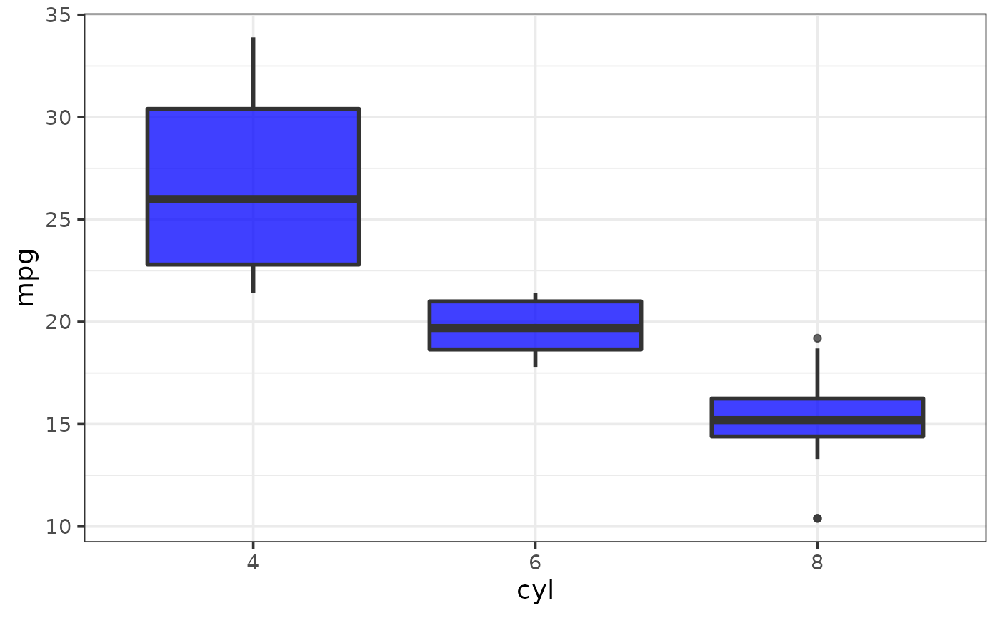

Easily generate box-and-whisker plots using ggplot2 with a simplified customization interface for common modifications with static (ggplot) and interactive (plotly) output options. The static output is useful for producing static reports (e.g. for manuscripts) and is readily customized further using ggplot2 syntax. The interactive output is helpful for exploring the data and producing dynamic html reports. See this blog post for an introduction to ggplot2.
plot_box( data, y, x = NULL, ..., fill_var = NULL, colour_var = NULL, xlab = NULL, ylab = NULL, title = NULL, title_hjust = 0.5, caption = NULL, caption_hjust = 0, fill_var_title = NULL, colour_var_title = NULL, ylim = c(NA, NA), ybreaks = ggplot2::waiver(), transform_y = FALSE, y_transformation = "log10", y_var_labs = ggplot2::waiver(), x_var_order = NULL, x_var_labs = NULL, fill_var_order = NULL, colour_var_order = NULL, fill_var_labs = NULL, colour_var_labs = NULL, fill_var_values = NULL, colour_var_values = NULL, palette = c("plasma", "C", "magma", "A", "inferno", "B", "viridis", "D", "cividis", "E"), palette_direction = c("d2l", "l2d"), palette_begin = 0, palette_end = 1, alpha = 0.75, greyscale = FALSE, line_size = 1, dots = FALSE, dots_colour = "black", dots_alpha = 0.4, dots_binwidth = 0.9, theme = c("classic", "bw", "grey", "light", "dark", "minimal"), text_size = 14, font = c("sans", "serif", "mono"), facet_var = NULL, facet_var_order = NULL, facet_var_labs = NULL, facet_var_strip_position = c("top", "bottom"), facet_var_text_bold = TRUE, legend_position = c("right", "left", "top", "bottom"), omit_legend = FALSE, interactive = FALSE, aesthetic_options = FALSE )
| data | A data frame or tibble containing the dependent measure "y" and any grouping variables. |
|---|---|
| y | The name of a numeric variable you want boxplots for (quoted or unquoted), e.g. y = "variable" or y = variable. |
| x | A categorical variable you want to obtain separate boxplots of y for, e.g. x = "grouping_variable" or x = grouping_variable. |
| ... | graphical parameters (not associated with variables) to be passed
to |
| fill_var | Use if you want to assign a variable to the box fill colour,
e.g. fill_var = "grouping_variable" or fill_var = grouping_variable.
Produces separate sets of boxes for each level of the fill variable. See
|
| colour_var | Use if you want to assign a variable to the box outline
colour, e.g. colour_var = "grouping_variable" or colour_var =
grouping_variable. Produces separate sets of boxes for each level of the
colour variable. See |
| xlab | Specify/overwrite the x-axis label using a character string, e.g. "x-axis label" |
| ylab | Specify/overwrite the y-axis label using a character string, e.g. "y-axis label" |
| title | Add a main title to the plot using a character string, e.g. "boxplots graph of y for each group of x" |
| title_hjust | Left-to-right/horizontal justification (alignment) of the main plot title. Accepts values from 0 (far left) to 1 (far right). Default is 0.5 (centre). |
| caption | Add a figure caption to the bottom of the plot using a character string. |
| caption_hjust | Left-to-right/horizontal justification (alignment) of the caption. Accepts values from 0 (far left) to 1 (far right). Default is 0 (left). |
| fill_var_title | If a variable has been assigned to fill using fill_var, this allows you to modify the variable label in the plot legend. |
| colour_var_title | If a variable has been assigned to colour using colour_var, this allows you to modify the variable label in the plot legend. |
| ylim | specify the y-axis limits, e.g. ylim = c(lower_limit, upper_limit). Use NA for the existing minimum or maximum value of y, e.g. the default is ylim = c(NA, NA). |
| ybreaks | This allows you to change the break points to use for tick
marks on the y-axis. |
| transform_y | Would you like to transform the y axis? (TRUE or FALSE) |
| y_transformation | If transform_y = TRUE, this determines the
transformation to be applied. Common choices include "log10" (the default),
"log2", "sqrt", or "exp". See |
| y_var_labs | Allows you to modify the labels displayed with the y-axis
tick marks. See |
| x_var_order | If a variable has been assigned to x, this allows you to
modify the order of the variable groups, e.g. x = grouping_variable,
x_var_order = c("group_2", "group_1"). See
|
| x_var_labs | If a variable has been assigned to x, this allows you to
modify the labels of the variable groups, e.g. x = grouping_variable,
x_var_labs = c("group_1_new_label" = "group_1_old_label",
"group_2_new_label" = "group_2_old_label"). See
|
| fill_var_order | If a variable has been assigned to fill using fill_var,
this allows you to modify the order of the variable groups, e.g. fill_var =
grouping_variable, fill_var_order = c("group_2", "group_1"). See
|
| colour_var_order | If a variable has been assigned to colour using
colour_var, this allows you to modify the order of the variable groups,
e.g. colour_var = grouping_variable, fill_var_order = c("group_2",
"group_1"). See |
| fill_var_labs | If a variable has been assigned to fill using fill_var,
this allows you to modify the labels of the variable groups, e.g. fill_var
= grouping_variable, fill_var_labs = c("group_1_new_label" =
"group_1_old_label", "group_2_new_label" = "group_2_old_label"). See
|
| colour_var_labs | If a variable has been assigned to colour using
colour_var, this allows you to modify the labels of the variable groups,
e.g. colour_var = grouping_variable, colour_var_labs =
c("group_1_new_label" = "group_1_old_label", "group_2_new_label" =
"group_2_old_label"). See |
| fill_var_values | If a variable has been assigned to fill using
fill_var, this allows you to modify the colours assigned to the fill of
each of the variable groups, e.g. fill_var = grouping_variable,
fill_var_values = c("blue", "red"). See
|
| colour_var_values | If a variable has been assigned to colour using
colour_var, this allows you to modify the colours assigned to the outline
of each of the variable groups, e.g. colour_var = grouping_variable,
colour_var_values = c("blue", "red"). See
|
| palette | If a variable is assigned to fill_var or colour_var, this determines which viridis colour palette to use. Options include "plasma" or "C" (default), "magma" or "A", "inferno" or "B", "viridis" or "D", and "cividis" or "E". See this link for examples. You can override these colour palettes with fill_var_values or colour_var_values. |
| palette_direction | Choose "d2l" for dark to light (default) or "l2d" for light to dark. |
| palette_begin | Value between 0 and 1 that determines where along the
full range of the chosen colour palette's spectrum to begin sampling
colours. See |
| palette_end | Value between 0 and 1 that determines where along the full
range of the chosen colour palette's spectrum to end sampling colours. See
|
| alpha | This adjusts the transparency/opacity of the box-and-whisker plots(s), ranging from 0 = 100% transparent to 1 = 100% opaque. |
| greyscale | Set to TRUE if you want the plot converted to greyscale. |
| line_size | Controls the thickness of the box plot lines. |
| dots | Set to TRUE if you want to add a dotplot layer over the box-and-whisker plot(s). |
| dots_colour | Controls the colour of the dots in the dotplot layer. Ignored if "dots" = FALSE or if a variable is assigned to "colour_var". |
| dots_alpha | This adjusts the transparency/opacity of the graphical components of the dotplot layer if "dots" = TRUE, with acceptable values ranging from 0 = 100% transparent to 1 = 100% opaque. |
| dots_binwidth | Controls the binwidth to use for the dotplot layer if
dots = TRUE. See |
| theme | Adjusts the theme using 1 of 6 predefined "complete" theme
templates provided by ggplot2. Currently supported options are: "classic"
(the elucidate default), "bw", "grey" (the ggplot2 default), "light",
"dark", & "minimal". See |
| text_size | This controls the size of all plot text. Default = 14. |
| font | This controls the font of all plot text. Default = "sans" (Arial). Other options include "serif" (Times New Roman) and "mono" (Courier New). |
| facet_var | Use if you want separate plots for each level of a grouping
variable (i.e. a faceted plot), e.g. facet_var = "grouping_variable" or
facet_var = grouping_variable. See |
| facet_var_order | If a variable has been assigned for faceting using
facet_var, this allows you to modify the order of the variable groups, e.g.
facet_var = grouping_variable, facet_var_order = c("group_2", "group_1").
See |
| facet_var_labs | If a variable has been assigned for faceting using
facet_var, this allows you to modify the labels of the variable groups
which will appear in the facet strips, e.g. facet_var = grouping_variable,
facet_var_labs = c("group_1_new_label" = "group_1_old_label",
"group_2_new_label" = "group_2_old_label"). See
|
| facet_var_strip_position | If a variable has been assigned for faceting using facet_var, this allows you to modify the position of the facet strip labels. Sensible options include "top" (the default) or "bottom". |
| facet_var_text_bold | If a variable has been assigned for faceting using facet_var, this allows you to use boldface (TRUE/default or FALSE) for the facet strip label text. |
| legend_position | This allows you to modify the legend position. Options include "right" (the default), "left", "top", & "bottom". |
| omit_legend | Set to TRUE if you want to remove/omit the legends. |
| interactive | Determines whether a static ggplot object or an
interactive html plotly object is returned. See
|
| aesthetic_options | If set to TRUE, opens a web browser to the tidyverse online aesthetic options vignette. |
A ggplot object or plotly object depending on whether static or interactive output was requested.
Wickham, H. (2016). ggplot2: elegant graphics for data analysis. New York, N.Y.: Springer-Verlag.
Craig P. Hutton, Craig.Hutton@gov.bc.ca
# \donttest{ plot_box(mtcars, x = cyl, y = hp, xlab = "# of cylinders", ylab = "horsepower", fill_var = am, fill_var_title = "transmission", fill_var_labs = c("manual" = "0", "automatic" = "1"), fill_var_values = c("blue", "red"), theme = "bw")#modifying fill doesn't work as well for the interactive version of a boxplot plot_box(mtcars, x = cyl, y = hp, xlab = "# of cylinders", ylab = "horsepower", fill_var = am, fill_var_title = "transmission", fill_var_labs = c("manual" = "0", "automatic" = "1"), fill_var_values = c("blue", "red"), theme = "bw", interactive = TRUE)#> Warning: 'layout' objects don't have these attributes: 'boxmode' #> Valid attributes include: #> '_deprecated', 'activeshape', 'annotations', 'autosize', 'autotypenumbers', 'calendar', 'clickmode', 'coloraxis', 'colorscale', 'colorway', 'computed', 'datarevision', 'dragmode', 'editrevision', 'editType', 'font', 'geo', 'grid', 'height', 'hidesources', 'hoverdistance', 'hoverlabel', 'hovermode', 'images', 'legend', 'mapbox', 'margin', 'meta', 'metasrc', 'modebar', 'newshape', 'paper_bgcolor', 'plot_bgcolor', 'polar', 'scene', 'selectdirection', 'selectionrevision', 'separators', 'shapes', 'showlegend', 'sliders', 'spikedistance', 'template', 'ternary', 'title', 'transition', 'uirevision', 'uniformtext', 'updatemenus', 'width', 'xaxis', 'yaxis', 'barmode', 'bargap', 'mapType'#using colour works better for the interactive version plot_box(mtcars, x = cyl, y = hp, xlab = "# of cylinders", ylab = "horsepower", colour_var = am, colour_var_title = "transmission", colour_var_labs = c("manual" = "0", "automatic" = "1"), colour_var_values = c("blue", "red"), theme = "bw", interactive = TRUE)#> Warning: 'layout' objects don't have these attributes: 'boxmode' #> Valid attributes include: #> '_deprecated', 'activeshape', 'annotations', 'autosize', 'autotypenumbers', 'calendar', 'clickmode', 'coloraxis', 'colorscale', 'colorway', 'computed', 'datarevision', 'dragmode', 'editrevision', 'editType', 'font', 'geo', 'grid', 'height', 'hidesources', 'hoverdistance', 'hoverlabel', 'hovermode', 'images', 'legend', 'mapbox', 'margin', 'meta', 'metasrc', 'modebar', 'newshape', 'paper_bgcolor', 'plot_bgcolor', 'polar', 'scene', 'selectdirection', 'selectionrevision', 'separators', 'shapes', 'showlegend', 'sliders', 'spikedistance', 'template', 'ternary', 'title', 'transition', 'uirevision', 'uniformtext', 'updatemenus', 'width', 'xaxis', 'yaxis', 'barmode', 'bargap', 'mapType'# }